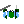

Slasha level development guide
Note: I haven't gotten the level editing part working yet
In Slasha, gameplay is subdivided into campaigns, which are in turn made of up levels. The campaigns are what you see on the start screen of the game, and the levels are the stages that you need to go through to beat a campaign. To start creating levels, you will first need to create a campaign. Click on "Create new" and enter a campaign name (don't worry, if you don't like the name you can always enter the campaign and delete the only level created, deleting the campaign). You will be redirected to the editing mode for the first level:
You see two windows there: the level editing window and the text editing window. The text in the text editing window is how the level is stored internally in the game. You can always edit the text (or paste in edited text - your editor is likely far more comfortable than the textbok) yourself rather than relying on the level editor - in fact, this is required for levels that use summons, triggers, variables and other advanced functionality and to edit the story. But we can start off with the level editor. You can select a color at the top to paint the terrain - either grey (inaccessible), a varying shade of green (accessible), or the yellow-green, signifying a setup rectangle (setup is not a color; setup terrain can be any color underneath, accessible or not). The minus sign on the top right is a button to remove a setup rectange. You can also press I and input an exact value (0 = rock, 1-99 = accessible terrain) to color the terrain. Now, click on any square to change its color or right click to select many squares at once. If you don't like something you did, you can always press Y to undo.
Now, on to the class menu.
The game starts you off with two classes, and this menu allows you to change their attributes, add new classes and delete classes. To select a class to work on use the left/right arrow keys or click on it on the top menu (clicking on or arrow keying your way to + will create a new class). The class attributes are:
side - what side the unit is on; 1 is the player, and 0,2,3,4,etc are different warring enemy factions. For most games, you will need just 0 and 1.aitype - how the unit is controlled. 1 is player controlled, 0 is computer controlled. You can have gimmick maps with player controlled enemies and you can have some computer controlled allies.damage - self-explanatoryhealth - self-explanatoryrange - 1 means you can reach units 1 (terrain) square away, 1.42 means you can reach units 1 square away diagonally, 2 means you can reach units 2 squares away, 2.24 means you can reach units a knight's move away, and so on, right up until 50, which lets you reach one corner from the other.image - you can use images from the game or put in a URL (only through text editing though). The game images are:
- Soldier.png, Soldier2.png, Soldier3.png
- Pikeman.png, Pikeman2.png, Pikeman3.png
- Archer.png, Archer2.png, Archer3.png
- Commander.png, Commander2.png, Commander3.png
-

 Mage.png, Mage2.png, Mage3.png
Mage.png, Mage2.png, Mage3.png
-  Guardian.png, Guardian2.png, Guardian3.png
- Horseman.png, Horseman2.png, Horseman3.png
- Special1.png, Special2.png
- Boss1.png, Boss2.png, Boss3.png
- Catapult.png
- Civilian.png
- Door.png
 Eye.png
Eye.png- Golem.png
- Medkit.png
- Zombie.png
speed - terrain squares per unit of game timedesc - description, useful only for advanced level editingcmult - units who are currently attacking (ie. hitting enemies, not advancing) see their speed reduced, multiplied by this valuebmult - units moving backwards see their speed reduced, multiplied by this valueinacc - ranged units with this parameter can't quite target the range of their arrows, so they will hit all enemies within this number of squares from the target along the line from the shooter to the target.
Click on or navigate to and press enter on an attribute to change it. Then, input the desired new name and press enter. Notice how the text on the right changes automatically to reflect the change you've made.
The last window is the units editing:
Here, click somewhere to place a unit, and click on a unit or on a class on the top to select a class to place units of. To move or remove units already placed, select them. That's it! When you're done editing, press Done (or hit D).
You'll now have an opportunity to play your level. If you're not satisfied with it, you can open the pause menu and select 'Edit this level', or even 'Delete this level'. To add another level to the campaign, select 'Add new level'. If you want to download your entire campaign, select 'Copy all campaign data' and do so. You will get a full campaign file which you will be able to upload through 'Paste campaign file'. The tutorial campaign has been provided for your convenience here
Don't be afraid to edit it! The level editor is completely transparent, it does no strange voodoo beyond creating the text you see there!
Now, onto more advanced editing. This is all about events - there are no advanced class, story or terrain features beyond what the editor provides. The simplest advanced feature is the when/whenever syntax. This summons a 'soldier' unit in the middle of the field at the start of the game:
unit soldier 20 15
'unit' is the command, and 'soldier 20 15' are its arguments. This command adds a soldier there after 500 ticks of game time, and every 150 ticks thereafter:
whenever 500t150 do unit soldier 20 15
Whenever has two sets of arguments: trigger arguments (XXXtYYY being the most common) and the command argument (which can, of course, itself take arguments). Whenever can work with any command, not just 'unit', This adds soldiers there in a quadratic expansion by periodically summoning periodic summons:
whenever 1000t500 do whenever 167t167 do unit soldier 20 15
Note that all 't' arguments use game time; the 167t167 does not operate on its own internal clock, so this command will first summon a unit at 1002 (167*6) ticks, not 1167.
Trigger arguments are far more complex than this, though. 't' is the only global trigger, all others work on a per-unit basis. If at least one unit passes all triggers, then the command is triggered.
whenever 50t50 10x13 10y13 $friendly do unit zombie 11.5 11.5
Every 50 ticks, if a unit with the description 'friendly' is standing within the area [10,10,13,13] (side note: in the level editing window, you can see the coordinates of the spot you're pointing your mouse to on the lower right), summon a zombie in the middle of the area. If one of the triggers is 'none', then whenever's functionality is flipped: if exactly zero units fit all the triggers then the command is triggered. Here's a good use for 'none'; I'll leave it up to you to figure out what it does:
when none $enemygeneral do win
when none $friendlygeneral do lose
When is just like whenever, except it can only trigger once. It's useful for one-time 'trapdoor' events:
when $friendly 10y12 20y22 do unit zombie 19 14
when $friendly 10y12 20y22 do unit zombie 20 14
when $friendly 10y12 20y22 do unit zombie 19 15
when $friendly 10y12 20y22 do unit zombie 20 15
The entire list of triggers is (AAA and BBB stand in for numbers or strings):
AAAtBBB - no units pass, except at AAA ticks and every BBB ticks thereafter, in which case all units passsAAA - a unit passes if its side is AAAAAAxBBB - a unit passes if its X coordinate is between AAA and BBBAAAyBBB - a unit passes if its Y coordinate is between AAA and BBBAAAhBBB - a unit passes if its health is between AAA and BBBAAAlBBB - a unit passes if it is within line of sight of (AAA,BBB)AAA=BBB - all units pass only if AAA is equal to BBB (only useful with variables, wait until later for that)AAA<BBB - all units pass only if AAA is less than BBB (only useful with variables, wait until later for that)AAA>BBB - all units pass only if AAA is greater than BBB (only useful with variables, wait until later for that)
Now, we'll cover the entire list of commands:
unit CLASS X Y - summons a unitxunit CLASS X Y - summons a unit at the exact location, making no compromises to try and fit it into a nearby unoccupied square (useful for strategically placed catapults)win - self-explanatorylose - self-explanatoryset TRIGGERS attribute ATT VAL - sets the attribute ATT (x,y,health,etc) of all units that pass TRIGGERS to VALchange TRIGGERS attribute ATT VAL - adds VAL to the attribute ATT (x,y,health,etc) of all units that pass TRIGGERSsetup LEFT TOP RIGHT BOTTOM - setup rectangle (not useful with when/whenever, obviously)setr VAR VAL - sets the variable VAR to VALchanger VAR VAL - adds VAL to the variable VAR
To use variables, put underscores around the variable's name and the substitution is done automatically. For example, consider some actual text from a level in the foundation campaign:
when none $enemy 16.666x40 do setr s 1
when _s_=1 do set 0x16.666 $friendly attribute health 0
when _s_=1 do win
When there are no enemies (remember, $enemy does not automatically map to 'enemies', you have to declare the descriptions for this to work) with X coordinates above 16.666, set s to 1. When s is 1, set the health of all friendly units in that zone to 0 (for scorekeeping purposes, obviously this doesn't change anything) and win. You can place variables anywhere, even like this:
whenever 10x13 10y13 do changer count 1
when 1000t do unit boss 20 15
when 1000t set $boss attribute health _count_00
When a unit is within the square, add 1 to the count, and at 1000 ticks add a boss with 100x the count as his health.
That's all you need to know. Happy editing!
Back